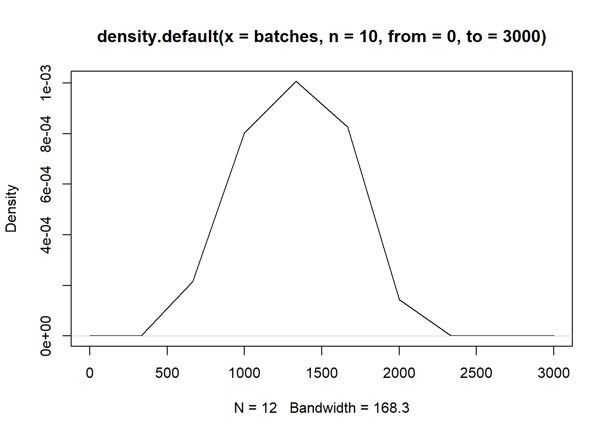

One of the most interesting theoretical about Non life Insurance for me was the idea of compound process. Using this formulation, we can obtain the usual expression to determine the total claim amount also called in some well known aplications as pure premium.
Is a random sum where the upper summation index is a counting process. In general we have that:
\[Z_t=\sum_{j=0}^{N_t}X_j\]
It is called the total loss or the total claim amount. Is easy to prove that the moment generating function of \(Z_t\) is given by \[M_{Z_t}(v)=M_{N_t}(log(M_X(v)))\] In addition to that, we know the next property of the moment generating function: \[E(X^k)=M^{(k)}(0)\]
Using this fact, we can get the expected value for the total loss or total claim amount.
\[\begin{align*} E(Z_t)&=M'_{N_t}(log(M_X(0)))\times\frac{M'_X(0)}{M_X(0)}\\ E(Z_t)&=E(N_t)E(X_1) \end{align*}\]
This method is useful to generate a random variable with distribution function \(F\)
Is based on the next theorem:
\(\textbf{Theorem}\\\) Let \(F\) a distribution function and \(U\sim Uniform(0,1)\), then:
\(X=F^{-1}(U)\sim F\)
\(F(X)\sim Uniform(0,1)\)
We consider \(X_1,X_2,...\) independent individual random losses or claim amounts, with distribution function \(F\)
\(k_t\): Individual number of claims ocurring during \([0,t]\) \(\forall t\geq 0\).
\(\{k_t\}_{t\geq 0}\): Is a birth process independent of \(\{X_k\}_{k\geq 1}\)
The \(\textbf{total loss}\) or \(\textbf{claim amount}\) is \[Z_t=\sum_{k=0}^{k_t}X_k\] where \(X_0=0\).
Let \(r_0\) the initial capital and \(c>0\) be the premium rate (assumed constant)
\[Y_t=r_o+ct-Z_t\] is the risk process.
One of the topics of interest for me is the mathematical ideas behind reinsurance.
One of the topics of relevance, is the extreme value theory. We introduced the concept of heavy and light tailed distributions. The basic interpretation of it is:
A distribution is light tailed, if is assigned smaller probabilities for larger values of the variable \(x\).
A distribution is heavy tailed, if is assigned larger probabilities to larger values of the variable \(x\).
\(\textbf{Some examples:}\) For heavy tailed distributions we have for instance:
-The top of the \(1\%\) of the world has the \(40\%\) of the wealth.
-The top of the \(2\%\) of twitter users post the \(60\%\) of tweets
During my studies in Switzerland, I applied for an internship in a Swiss company. I started an internship in one of the most important companies in the field of Pharma and Biotech. I have been learning a lot about Quality control and some other appliactions of statistics. It has been really interesting. I have not enoguh time to post something in this blog, but I don’t want to forget how to do that from R. I attach a brief summary of useful stuff during my internship. I hope someday to post in a dayly basis.
KDE is a non parametric way to estimato the probability density function of a random variable, introduced by Rosenblatt (1956). There are about 30 packages that performs density estimation problem in R
Let n i.i.d data points \(X_1,X_2,...,X_n\), we are interested in an estimate $ = (s)$, of the true density \(f(x)\).
Is the oldest (1840’s) and least sophisticated method of density estimation. Example: This data set contains the thickness and additional data for 84 metal plates. We have \(84\) observations on the following \(5\) variables.
day: a factor with the day (seven days)
shift: a factor with the shift (two shifts)
thickness: a numeric vector with the thickness (in)
ushift: a factor with the day-shift combination
flaws: an integer vector with the number of flaws on the surface of sampled plates
library(SixSigma)## Warning: package 'SixSigma' was built under R version 4.1.3data<-ss.data.thickness2
#We present an histogram of the variable thickness
hist(data$thickness,main="Histogram thickness",col="blue",xlab="thickness")A kernel is a special type of probability function with the following properties:
Rosenblatt proposed putting smooth kernel weights in each of the observations.
From the library stats, we have the density function that computes kernel density estimates. The function has the next parameters: - x: The data from wich the estimate is to be computed. - bw: The smothing bandwith used. - kernel: A character string giving the smoothing kernel to be used, “gaussian”,“rectangular”, “triangular”,..etc. - n: The number of equally spaced points at which the density is to be estimated, in this case the bw will be equals to length of x divided to n-1 - from,to: left and right points of the grid at wich the density is to be estimated.
#First we simulate a set of 12 batches
batches<-rgamma(n = 12,shape=7,rate=0.005)
dens<-density(batches,from = 0,to=3000,n=10)
plot(dens)
dens##
## Call:
## density.default(x = batches, n = 10, from = 0, to = 3000)
##
## Data: batches (12 obs.); Bandwidth 'bw' = 168.3
##
## x y
## Min. : 0 Min. :0.000e+00
## 1st Qu.: 750 1st Qu.:3.150e-07
## Median :1500 Median :7.373e-05
## Mean :1500 Mean :2.999e-04
## 3rd Qu.:2250 3rd Qu.:6.559e-04
## Max. :3000 Max. :1.007e-03##Grid
(3000-0)/9## [1] 333.3333dens$x## [1] 0.0000 333.3333 666.6667 1000.0000 1333.3333 1666.6667 2000.0000
## [8] 2333.3333 2666.6667 3000.0000plot(dens)
Most of the statistical analysis assumes normality. However in practice, it is not common get variables with non-normal distribution and one alternative is to transform the data, that is the application of a mathematical function to the original dataset.
The \(Z\) family of distributions is composed by three distributions named Unbounded \(SU\), Lognormal \(SL\), and Bounded \(SB\), which allow to transform into a normal distribution selecting one of the three of them. The transformations are:
\[\begin{align*} Z&=\gamma+\eta sinh^{-1}\frac{x-\epsilon}{\lambda}\\ \text{where }\eta,\lambda&>0,-\infty<\gamma<\infty, -\infty<\epsilon<\infty \text{ and } -\infty<x<\infty\\ Z&=\gamma+\eta \ln^{-1}(x-\epsilon)\\ \text{where }\eta&>0,-\infty<\gamma<\infty, -\infty<\epsilon<\infty \text{ and }\epsilon<x\\ Z&=\gamma+\eta\ln(\frac{x-\epsilon}{\lambda+\epsilon-x})\\ \text{where }\eta,\lambda&>0,-\infty<\gamma<\infty, -\infty<\epsilon<\infty \text{ and } -\epsilon<x<\epsilon+\lambda \end{align*}\]
From the previous expressions we can perform the inverse transformation, using the results of estimated parameters, for instance: $$ \[\begin{align*} \frac{Z-\gamma}{\eta}&=\sinh^{-1}(\frac{x-\epsilon}{\lambda})\\ \lambda \sinh(\frac{Z-\gamma}{\eta})+\epsilon=x \end{align*}\]
$$
library(Johnson)
set.seed(100)
batches<-rexp(n = 12,rate=0.005)
johnson_batches<-RE.Johnson(batches)
johnson_batches$'function'## [1] "SB"## A SU transformation was used with the next parameters
lambda<-johnson_batches$f.lambda
gamma<-johnson_batches$f.gamma
epsilon<-johnson_batches$f.epsilon
eta<-johnson_batches$f.eta
#Using the inverse formula we get the original values, the same argument used in the other families.
#There is a nice explanation about the discrimination of three families in The Johnson System: Selection and Parameter Estimation by James F. Slifker & Samuel S. Shapiro .
## after the inverse transformation the original data coincide
epsilon+(lambda*sinh((johnson_batches$transformed-gamma)/(eta)))## [1] -3464.06330 -4652.51609 -36517.84218 -12.57262 -5514.49065
## [6] -2533.80734 -41133.93270 -1351.56135 -14875.09136 -19335.23912
## [11] -6705.76078 -10818.12165batches## [1] 184.84232 144.76744 20.92897 619.47247 124.96105 234.88587 18.62344
## [8] 349.67815 49.99859 38.86529 105.02043 67.60868